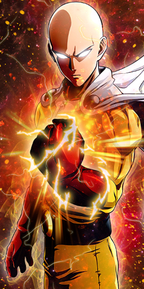
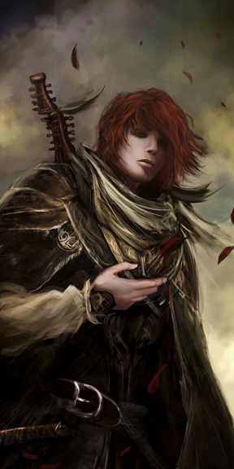
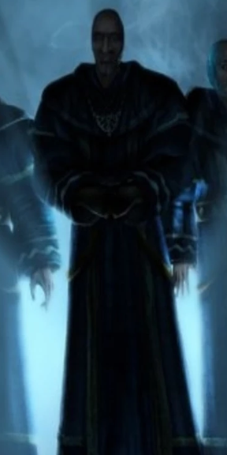

Cartas de Personajes

Debido a su condición sobrehumana, Saitama se enfrenta a una crisis existencial, ya que ahora es demasiado fuerte, siendo capaz de derrotar a sus oponentes de un solo golpe, por lo que sus batallas las encuentra aburridas y sin emoción.
psicólogo clínico, crítico cultural y profesor de psicología canadiense. Sus principales áreas de estudio son la psicopatología, psicología social y de la personalidad, con un interés particular en la psicología de las creencias religiosas e ideológicas y la evaluación y mejora de la personalidad y el rendimiento laboral.

Es un arcanista de innegable talento, que entró en la Universidad contando con apenas quince años, buscando la magia real, la nominación, así como fortuna y la posibilidad de saber más acerca de los Chandrian.

Pero Beliar odiaba ver la luz y estaba destruyendo todo lo que Innos creaba. Entonces Adanos vio que así nada podría existir en el mundo, ni la luz ni la oscuridad. Así que se interpuso entre sus hermanos y trató de reconciliarlos consigo mismo... pero fue en vano.

En 1997 publica el libro Tomáh Errázurih.
Tras radicarse en Manhattan en 1998, Lira escribió, produjo y dirigió una cómica película corta, So Kinky. En 2002 escribió el libro Acrobat el cual fue llevado al cine por Miramax. Ese mismo año Lira regresó a Chile y comenzó a producir y escribir en español. En 2006 Lira co-escribió, produjo y dirigió Catalina’s Kidnapping, llamada en Chile "Secuestro".
Entre 2010 y 2012 Gonzalo publicó análisis económicos en su blog, hizo un pronóstico sobre la hiperinflación que amenazaba al Dólar americano.6
En 2017 estuvo activo en redes sociales, especialmente YouTube, bajo el nombre "Coach Red Pill".
un estudiante de veintitrés años que proviene de una humilde familia del interior de la Rusia imperial, que se desplaza a San Petersburgo para estudiar Derecho en la Universidad. Es hijo de una familia dedicada al servicio doméstico, siendo huérfano de padre, e hijo de Pulqueria Raskólnikova, costurera, y hermano de Dunia, una sirvienta doméstica.
"La mala suerte la pagas 100 yenes, pero la buena suerte 500 o 1000"
Placeholder content for this accordion, which is intended to demonstrate the
.accordion-flush class. This is the first item's accordion body.
cómico, exdeportista, comentarista de artes marciales y presentador de pódcast estadounidense. Fan de la comedia desde su juventud, Rogan comenzó una carrera como monologuista en agosto de 1988 en el área de Boston. Se mudó a Nueva York dos años después.
He is professionally a master builder and architectural designer. Moreover, he is also recognized as a teacher, geometrician, and geomythologist.
Carlson has been involved in research for more than four decades now. He is already recognized by The National Science Teachers Association.
His popular podcast titled “Kosmographia” explores the catastrophic history of the world.
In 1997, a CNN documentary titled “Fire from the Sky” was released. It was based upon Carlson’s research into catastrophic events on Earth.
Some of his other famous podcasts are Slaying of Taurus the Bull, The Great Year Model of Cyclic Time & Periodic Disaster, Mind Escape, Earth Ancients, etc.
Nikolas Lloyd, better known online as Lindybiege, is an English YouTuber. His videos include many 'points' about ancient and medieval warfare and technology.
un adolescente que jura vengarse de enormes criaturas conocidas como titanes que devoraron a su madre y destruyeron su ciudad en la Muralla María.
un mercenario que viaja de compañía en compañía y de compañía en compañía. Después de conocer a Griffith, Guts es derrotado en la batalla por Griffith y se ve obligado a unirse a Band of the Hawk cuando este último proclama que ahora lo "posee".
Durante su reinado, derrotó a los alamanes, godos y vándalos y el Imperio fue reunificado íntegramente después de 15 años de rebelión que habían llevado a la pérdida de dos tercios de su territorio en favor de dos estados separatistas: el Imperio de Palmira en Oriente y el Imperio Galo en Occidente. También fue el responsable de la construcción de las murallas aurelianas en Roma y del abandono definitivo de la provincia romana de Dacia. Sus éxitos marcaron el fin de la crisis del siglo III en el Imperio, llegando a ser nombrado como Restitutor Orbis («Restaurador del Mundo»). Aureliano era célebre por la disciplina y conducta ejemplar que exigía en su ejército.
nació en Belfast, Reino Unido. Fue bailarín en su juventud y pronto se convenció de seguir una carrera dramática en la Royal Academy of Dramatic Art
comentarista político, presentador de medios, actor y comediante conservador estadounidense-canadiense. Presenta Louder with Crowder, un podcast político diario y un canal de YouTube, que incluye un segmento recurrente llamado "Change My Mind".